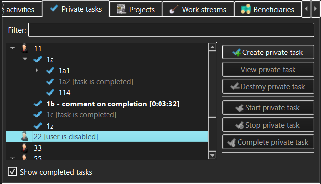

Private Tasks view
The Private Tasks view allows management of Private Tasks (subject to access
permissions granted after login). These are Tasks available to the specific User
who can login to a TimeTracker3 workspace, with each User having their own set
of configured Private Tasks.

The controls in the Private Tasks view allow the user to access:
- Private tasks tree - this displays the tree of
available Private Tasks. Normally all Private Tasks of the logged in User will be visible; however, if the User is configured to only be
allowed to work on specific Private Tasks, then such user will only be
able to see these configured Private Tasks but not the other existing
Private Tasks. NOTE that someone logging in with an Administrator capability
will see all Users and all their Private Tasks.
- Filter - type anything here to narrow the set of
displayed Private Tasks or to quickly find a specific Private Task. The
filter match can appear anywhere within the Private Task name. If some
sub-task of a Private Task matches the filter but its parent Private Task does
not, the parent Private Task will still be displayed, but will be grayed out.
- Show completed tasks - if un-checked, Private Tasks
marked as "completed" will not appear in the Private Tasks tree. An exception
to this rule is a "completed" Private Task that has an "un-completed"
sub-task - such a "completed" parent will appear in the Private Tasks tree
but will be grayed out and visually marked as "completed".
- Create private task - use this button to create a new
Private Task.
This will only be permitted to someone with Administrator or Manage Private
Tasks
capability and will be disallowed in a read-only workspace.
- View/Modify private task - use this button to view or modify
the Private Task currently selected in the Private Tasks tree. The meaning of this
button (view or modify) will be determined by whether the current user has
logged in with Administrator or Manage Private Tasks capability and whether or not
the workspace is read-only.
- Destroy private task - use this button to permanently destroy
the Private Task currently selected in the Private Tasks tree. You will be asked to
confirm the destruction, as this is a dangerous operation in that it also
destroys all its sub-tasks and all Work items and Events logged against that
Private
Task and its sub-tasks. The destroy confirmation
dialog that pops up will show just how much the recorded work history will be
impacted.
- Start private task - use this button to start
recording the currently selected Private Task. If any Activity or Task
was already being recorded, its recording is automatically stopped and the
corresponding Work item is logged into the workspace.
- Stop private task - use this button to stop
recording the Private Task that is currently being recorded. This button
will only be available when such a Private Task is selected in the Private
Tasks tree.
- Complete public task - use this button to mark the
selected Private Task as "completed". The Private Task may be configured to
require the user to enter a comment when it is being completed; if this is
so, then the comment entry dialog will pop up. NOTE that a "completed"
Private Task may be "un-completed" in order to resume working on it, but this
will require Administrator capability (i.e. the Manage Private Tasks
capability will not be sufficient). This ensures that the proper Private Task
workflow is observed but also allows taking care of e.g. erroneous or
accidental completion.
While a Private Task is being recorded, the corresponding item in the
Private Tasks tree will be highlighted and its recorded duration will be
displayed alongside the item and updated live.
Note that only one activity can be recorded at any given time. Therefore, if
e.g. a Public Task or a Private Activity is being recorded, starting a Private
Task will stop and log the previously active recording, logging the
corresponding Work item.
As well as action buttons, the Private Tasks tree allows invoking the same
actions (create, modify, destroy, start, stop or complete Private Tasks) via the context menus that pop
up when the Private Tasks tree items are right-clicked.
See also:
Create/Modify Private Task dialog,
Destroy
Private Task dialog